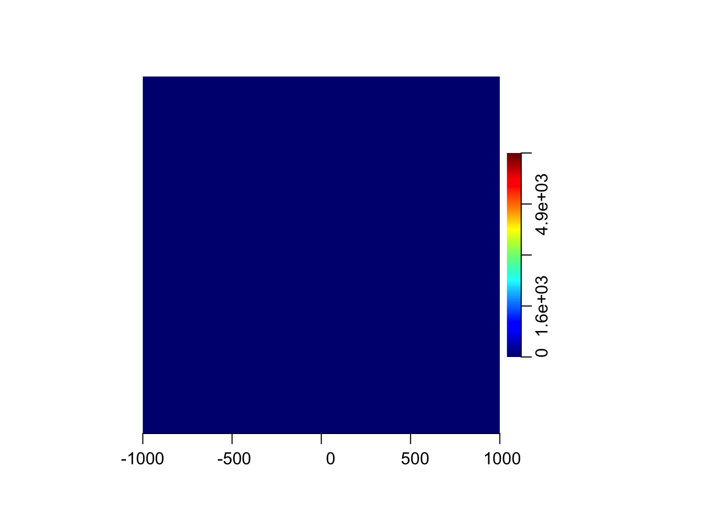
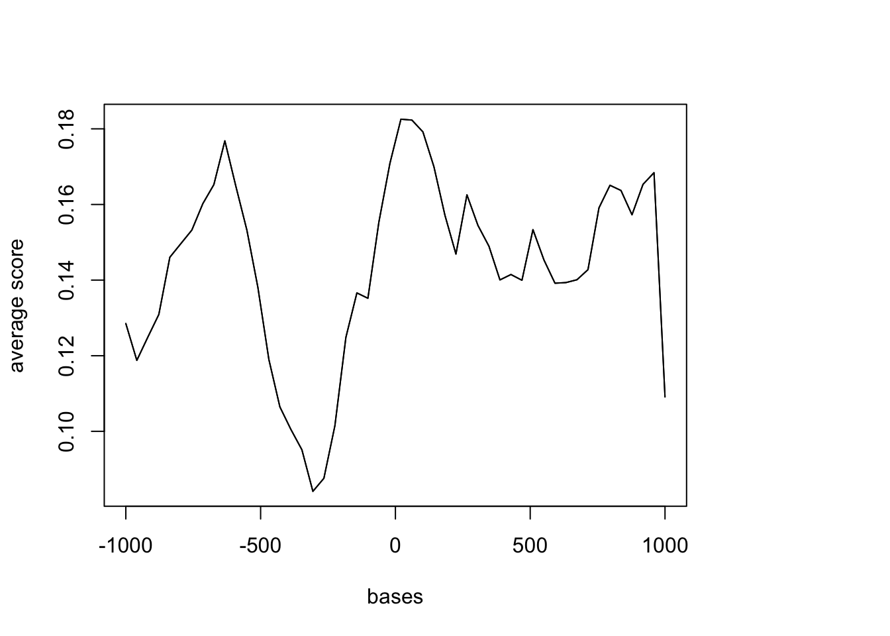
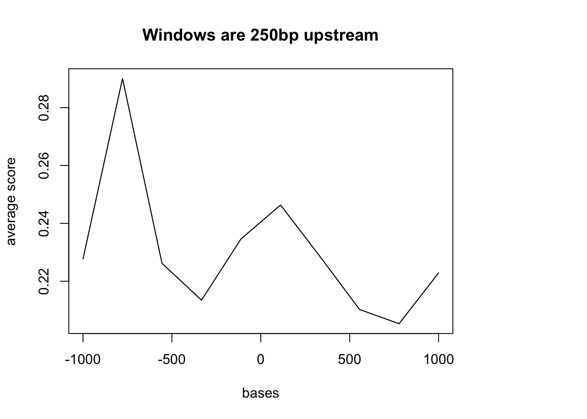

Last updated: 2017-11-29
Code version: ff2076f
I will look at genome feature overlap with the Netseq1 libary. I will start with one sample then move to more once the code is working. I will look specifically at overlap with CTCF sites.
Load libraries:
library(genomation)Loading required package: gridlibrary(genomationData)CTCF_gen= readGeneric(file = "../data/hg19.GM72.CTCF", header=FALSE, keep.all.metadata = TRUE)
#bed file for one of my libraries
# to get from midway
#scp brimittleman@midway2.rcc.uchicago.edu:/project2/gilad/briana/Net-seq/Net-seq1/data/cov/YG-SP-NET1-18486-dep-2017-10-13_S4_R1_001-sort.dedup.cov.bed .
dedup.18486.dep= readGeneric(file= "../data/net1_18486_dep_dedup_chr.bed", header = FALSE, keep.all.metadata = TRUE)Try to get the density of net-seq reads around CTCF sites
fix formating of file with
#awk '$0="chr"$0' file > newfileNeed to do this with the reads not the coverage file. I used the samtools bamtobed function on one of the dedup files and copied this to the data file here.
peak.annot = annotateWithFeature(CTCF_gen, dedup.18486.dep, intersect.chr = TRUE)intersecting chromosomes...peak.annotsummary of target set annotation with feature annotation:Rows in target set: 175659----------------------------percentage of target elements overlapping with features:dedup.18486.dep other
11.03 88.97 percentage of feature elements overlapping with target:[1] 17.52I need to compare this to another feature. I will look at the genes file.
genes= readGeneric(file= "../data/hg19.ref.genes.bed", header = FALSE, keep.all.metadata = TRUE)
head(genes)GRanges object with 6 ranges and 9 metadata columns:
seqnames ranges strand | V4 V5
<Rle> <IRanges> <Rle> | <character> <integer>
[1] chr1 [66999251, 67216822] * | NM_001308203 0
[2] chr1 [66999638, 67216822] * | NM_001350217 0
[3] chr1 [66999638, 67216822] * | NM_001350218 0
[4] chr1 [66999638, 67216822] * | NM_032291 0
[5] chr1 [25071759, 25170815] * | NM_013943 0
[6] chr1 [33546713, 33586132] * | NM_001293562 0
V6 V7 V8 V9 V10
<character> <integer> <integer> <integer> <integer>
[1] + 67000041 67208778 0 22
[2] + 67000041 67208778 0 25
[3] + 67000041 67208778 0 23
[4] + 67000041 67208778 0 25
[5] + 25072044 25167428 0 6
[6] + 33547850 33585783 0 11
V11
<character>
[1] 104,123,64,25,57,55,176,25,52,86,93,75,128,127,66,112,156,133,203,65,165,8067,
[2] 413,64,25,84,57,55,176,12,12,25,52,86,93,75,501,128,127,60,112,156,133,203,65,165,8067,
[3] 413,64,25,57,55,176,12,12,25,52,86,93,75,128,127,60,112,156,133,203,65,165,8067,
[4] 413,64,25,72,57,55,176,12,12,25,52,86,93,75,501,128,127,60,112,156,133,203,65,165,8067,
[5] 357,110,126,107,182,3552,
[6] 182,118,177,174,173,135,166,163,113,215,488,
V12
<character>
[1] 0,677,92278,99501,106208,109241,109975,137426,138375,139712,143435,146109,155579,156621,160870,185725,195695,200179,205766,207089,207703,209504,
[2] 0,91891,99114,100124,105821,108854,109588,126557,133574,137039,137988,139325,143048,145722,147913,155192,156234,161478,185338,195308,199792,205379,206702,207316,209117,
[3] 0,91891,99114,105821,108854,109588,126557,133574,137039,137988,139325,143048,145722,155192,156234,161478,185338,195308,199792,205379,206702,207316,209117,
[4] 0,91891,99114,101988,105821,108854,109588,126557,133574,137039,137988,139325,143048,145722,147913,155192,156234,161478,185338,195308,199792,205379,206702,207316,209117,
[5] 0,52473,68825,81741,94591,95504,
[6] 0,278,1065,2841,10937,12169,13435,15594,16954,36789,38931,
-------
seqinfo: 54 sequences from an unspecified genome; no seqlengthspeak.annot_genes = annotateWithFeature(genes, dedup.18486.dep, intersect.chr = TRUE)intersecting chromosomes...Warning in .Seqinfo.mergexy(x, y): Each of the 2 combined objects has sequence levels not in the other:
- in 'x': chrM, chr1_gl000191_random, chr1_gl000192_random, chr4_ctg9_hap1, chr4_gl000193_random, chr4_gl000194_random, chr6_apd_hap1, chr6_cox_hap2, chr6_dbb_hap3, chr6_mann_hap4, chr6_mcf_hap5, chr6_qbl_hap6, chr6_ssto_hap7, chr7_gl000195_random, chr17_ctg5_hap1, chr17_gl000205_random, chr19_gl000209_random, chrUn_gl000211, chrUn_gl000212, chrUn_gl000213, chrUn_gl000215, chrUn_gl000218, chrUn_gl000219, chrUn_gl000220, chrUn_gl000222, chrUn_gl000223, chrUn_gl000224, chrUn_gl000227, chrUn_gl000228, chrUn_gl000241
- in 'y': chrMT
Make sure to always combine/compare objects based on the same reference
genome (use suppressWarnings() to suppress this warning).Warning in .Seqinfo.mergexy(x, y): Each of the 2 combined objects has sequence levels not in the other:
- in 'x': chrMT
- in 'y': chrM, chr1_gl000191_random, chr1_gl000192_random, chr4_ctg9_hap1, chr4_gl000193_random, chr4_gl000194_random, chr6_apd_hap1, chr6_cox_hap2, chr6_dbb_hap3, chr6_mann_hap4, chr6_mcf_hap5, chr6_qbl_hap6, chr6_ssto_hap7, chr7_gl000195_random, chr17_ctg5_hap1, chr17_gl000205_random, chr19_gl000209_random, chrUn_gl000211, chrUn_gl000212, chrUn_gl000213, chrUn_gl000215, chrUn_gl000218, chrUn_gl000219, chrUn_gl000220, chrUn_gl000222, chrUn_gl000223, chrUn_gl000224, chrUn_gl000227, chrUn_gl000228, chrUn_gl000241
Make sure to always combine/compare objects based on the same reference
genome (use suppressWarnings() to suppress this warning).peak.annot_genessummary of target set annotation with feature annotation:Rows in target set: 66635----------------------------percentage of target elements overlapping with features:dedup.18486.dep other
86.97 13.03 percentage of feature elements overlapping with target:[1] 60.91The genes file has a lot of random chr tags at the end.
sm = ScoreMatrixBin(target = dedup.18486.dep, windows = CTCF_gen, bin.num = 50)Warning in .local(target, windows, bin.num, bin.op, strand.aware): 32
windows fall off the targetWarning in .local(target, windows, bin.num, bin.op, strand.aware): supplied
GRanges object contains ranges of width < number of binsheat.matrix= heatMatrix(sm, xcoords = c(-1000, 1000))
heat.matrixNULLplotMeta(sm, xcoords = c(-1000, 1000))
TSS= readGeneric(file = "../data/SwitchGear_TSS.bed", header=FALSE, keep.all.metadata = TRUE)
dedup.18486.dep= readGeneric(file= "../data/net1_18486_dep_dedup_chr.bed", header = FALSE, keep.all.metadata = TRUE)
annotateWithFeature(TSS, dedup.18486.dep, intersect.chr = TRUE)intersecting chromosomes...Warning in .Seqinfo.mergexy(x, y): Each of the 2 combined objects has sequence levels not in the other:
- in 'x': chrM
- in 'y': chrMT
Make sure to always combine/compare objects based on the same reference
genome (use suppressWarnings() to suppress this warning).Warning in .Seqinfo.mergexy(x, y): Each of the 2 combined objects has sequence levels not in the other:
- in 'x': chrMT
- in 'y': chrM
Make sure to always combine/compare objects based on the same reference
genome (use suppressWarnings() to suppress this warning).summary of target set annotation with feature annotation:Rows in target set: 131746----------------------------percentage of target elements overlapping with features:dedup.18486.dep other
6.61 93.39 percentage of feature elements overlapping with target:[1] 4.53#sm2 = ScoreMatrixBin(target = dedup.18486.dep, windows = TSS)
#plotMeta(sm2, xcoords = c(-1000, 1000))Problem: This TSS file just has the 1bp site. I need to make a file that is 200 up and downstream of this site. Maybe first try the promoter file that was 250bp upstream of the gene.
ref_250up= readGeneric(file = "../data/refseq_250up.bed", header=FALSE, keep.all.metadata = TRUE)
dedup.18486.dep= readGeneric(file= "../data/net1_18486_dep_dedup_chr.bed", header = FALSE, keep.all.metadata = TRUE)
sm2 = ScoreMatrixBin(target = dedup.18486.dep, windows = ref_250up)Warning in .local(target, windows, bin.num, bin.op, strand.aware): 3100
windows fall off the targetplotMeta(sm2, xcoords = c(-1000, 1000), main="Windows are 250bp upstream")
sessionInfo()R version 3.4.2 (2017-09-28)
Platform: x86_64-apple-darwin15.6.0 (64-bit)
Running under: macOS Sierra 10.12.6
Matrix products: default
BLAS: /Library/Frameworks/R.framework/Versions/3.4/Resources/lib/libRblas.0.dylib
LAPACK: /Library/Frameworks/R.framework/Versions/3.4/Resources/lib/libRlapack.dylib
locale:
[1] en_US.UTF-8/en_US.UTF-8/en_US.UTF-8/C/en_US.UTF-8/en_US.UTF-8
attached base packages:
[1] grid stats graphics grDevices utils datasets methods
[8] base
other attached packages:
[1] genomationData_1.10.0 genomation_1.10.0
loaded via a namespace (and not attached):
[1] Rcpp_0.12.13 plyr_1.8.4
[3] compiler_3.4.2 git2r_0.19.0
[5] GenomeInfoDb_1.14.0 XVector_0.18.0
[7] bitops_1.0-6 tools_3.4.2
[9] zlibbioc_1.24.0 digest_0.6.12
[11] gridBase_0.4-7 tibble_1.3.4
[13] gtable_0.2.0 evaluate_0.10.1
[15] BSgenome_1.46.0 lattice_0.20-35
[17] rlang_0.1.4 Matrix_1.2-11
[19] DelayedArray_0.4.1 yaml_2.1.14
[21] parallel_3.4.2 GenomeInfoDbData_0.99.1
[23] rtracklayer_1.38.0 stringr_1.2.0
[25] knitr_1.17 hms_0.3
[27] Biostrings_2.46.0 S4Vectors_0.16.0
[29] IRanges_2.12.0 stats4_3.4.2
[31] rprojroot_1.2 data.table_1.10.4-3
[33] impute_1.52.0 Biobase_2.38.0
[35] R6_2.2.2 plotrix_3.6-6
[37] XML_3.98-1.9 BiocParallel_1.12.0
[39] seqPattern_1.10.0 rmarkdown_1.6
[41] reshape2_1.4.2 readr_1.1.1
[43] ggplot2_2.2.1 magrittr_1.5
[45] scales_0.5.0 backports_1.1.1
[47] Rsamtools_1.30.0 htmltools_0.3.6
[49] matrixStats_0.52.2 BiocGenerics_0.24.0
[51] GenomicRanges_1.30.0 GenomicAlignments_1.14.0
[53] SummarizedExperiment_1.8.0 colorspace_1.3-2
[55] KernSmooth_2.23-15 stringi_1.1.5
[57] lazyeval_0.2.1 munsell_0.4.3
[59] RCurl_1.95-4.8 This R Markdown site was created with workflowr